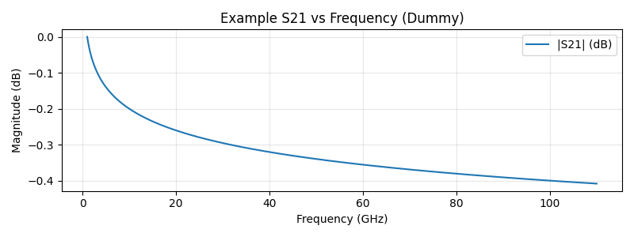

RF Engineer Notebook¶
Welcome! This is a living notebook for RF/MW design notes, simulations, and measurements.
Tip: Use the left navigation to browse topics. Use the top search bar to find anything quickly.
Quick Links¶
- Transmission Lines → Microstrip, CPW, GCPW
- Simulation Techniques → ADS tips, CILD, EM setup checklists
- Test & Measurement → VNA calibration, TDR notes
Example Diagram (Mermaid)¶
flowchart LR
A[Define Specs] --> B[Build Stackup]
B --> C[EM Model]
C --> D[Extract S-params]
D --> E[Optimize/Match]
E --> F[Validate on VNA]
Example Math¶
Sed ut perspiciatis $$ Z_0 = \sqrt{\dfrac{R + j\omega L}{G + j\omega C}} $$ with frequency-dependent elements for wideband work.
Example Plot¶

Made with MkDocs Material. Edit these pages in docs/ and push changes — the site updates automatically.